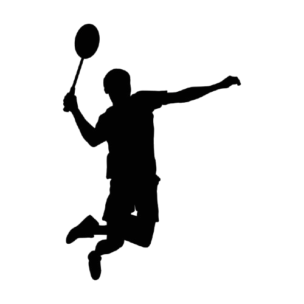

Je suis Luc HAUWEL
Bonjour, je suis Luc et je suis en troisième année de BUT Informatique à Clermont-Ferrand. Je suis un étudiant très dynamique qui aime travailler en équipe. Lorsque je réalise un projet, j’apprécie de le faire avec des camarades et de pousser ces derniers vers le haut. J’ai développé ces compétences dans des projets académiques mais aussi des différents sports que j’ai pu pratiquer comme le basketball ou la musculation.
Mes centres d'intérêt

Sports individuels
Tout au long de ma vie, j'ai pratiqué différents sports individuels tels que le badminton ou le tir à l'arc. Ces sports m'ont enseignés la discipline, la concentration, ainsi que la gestion de l'effort sur la durée. Ces sports m'ont également permis de développer ma capacité à rester motivé et à me fixer des objectifs personnels à court ou à long terme.
Sortir avec mes amis
Dès que j'en ai l'occasion, j'apprécie passer du temps avec mes amis. Ces moments de convivialité me permettent de me détendre, de renforcer mes liens sociaux et de garder un bon équilibre entre vie personnelle et études.
Jeux vidéo
Les jeux vidéo occupent une place importante dans mon temps libre. Au-delà du divertissement, ils m'ont permis de développer des compétences utiles comme la prise de décision rapide, le travail en équipe (notamment via les jeux multijoueurs) et la gestion de projet à travers la création de contenus ou de mods. Cet univers m’a aussi naturellement conduit à m’intéresser au développement informatique.